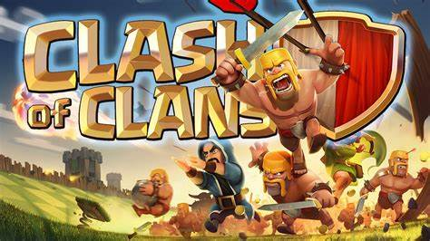

I'm Patrick
For you

For you
I am Patrick, a good student. a handsome boy a.
Eating wholegrain foods such as brown rice, wholemeal bread and rolled oats can help reduce the risk of developing heart disease and diabetes. They can also help with weight management because they keep you feeling full longer and reduce the need for snacking. Set a goal to ask for brown rice and make it measurable e.g. ask for brown rice at least 3 times a week at lunch. These 5 good eating habits take time to develop. Be patient. When we slip up, rather than give up, we should persevere. These changes, no matter how small, make a big difference to our health.
Clash of Clans is a 2012 free-to-play mobile strategy video game developed and published by Finnish game developer Supercell.
The game was released for iOS platforms on August 2, 2012, and on Google Play for Android on October 7, 2013.
The game is set in a fantasy-themed[3] persistent world[4] where the player is a chief of a village.
Clash of Clans tasks players to build their own village using the resources gained from attacking other player's villages with troops;
earning rewards, buying them with medals or by producing them at their own village. The main resources are gold, elixir and dark elixir.
Players can conjoin to create clans, groups of up to fifty people, who can then participate in Clan Wars together,
donate and receive troops, and chat with each other.
Clash of Clans was released to generally positive reviews from critics.
Don't be shy. Send me a message.
© 2022 Patrick Garcia @ isabela state university